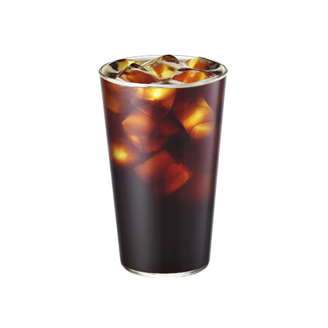
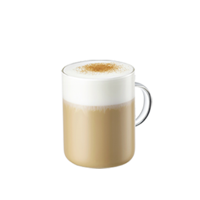
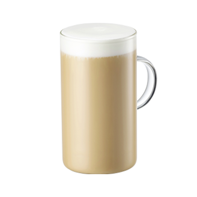
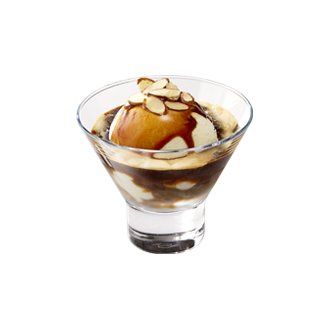

FG CAFE
▶ 은은한 카페 분위기
▶ 비오는날 카페 분위기
▶ 숲속 분위기
▶ 바다 분위기
아메리카노
에스프레소
카푸치노
카페라떼
아포가토
콜드브루
아메리카노(Americano)
에스프레소에 물을 넣어 연하게 마시는 커피이다. 적당량의 뜨거운 물을 섞는 방식이 연한 커피를 즐기는 미국에서 시작된 것이라 하여 ‘아메리카노’라 부른다. 우리나라에서도 가장 인기 있는 메뉴 중 하나이다. 에스프레소에 쓰이는 원두와 물의 양에 따라 커피 맛이 천차만별이다. 참고로 물을 넣어 희석시켰다고 해서 커피 맛도 흐려지는 것은 아니다. 오히려 뜨거운 물이 맛을 더욱 부드럽게 살려 주어 커피 본연의 특징을 강조해 주기도 한다. 머그잔에 적당량의 물을 붓고 난 후 살살 돌리면서 에스프레소를 부어주면 진한 크레마가 살짝 떠서 더 맛있어 보인다.

에스프레소(Espresso)
원래 원두를 끓여 우려내었던 커피를 신속하게 추출하기 위해 고안된 방법이다. 1900년대 초반 이탈리아의 밀라노에서 최초로 만들어졌고, 증기로 뽑는 모습이 기관차를 연상시킨다 하여 Express를 뜻하는 이탈리아어에서 유래됐다는 이야기도 떠돌지만 근거없는 소설이고, 어원 설명하는 사이트인 Etymonline에 등재된 것처럼 압력으로 짜냈다는 뜻, 혹은 빠르다는 뜻으로 Espresso가 쓰였다. 호주, 뉴질랜드에서는 쇼트 블랙(Short Black)이라고도 하는데, 이는 커피에 물을 타는 카페 아메리카노와 다르게 '물에 커피(숏트 블랙)를 타는' 롱 블랙(Long Black)에 넣기 때문이다.

카푸치노(Cappuccino)
우유를 넣은 커피의 일종. 카푸치노(이탈리아어: cappuccino)는 에스프레소를 베이스로 한 커피 음료로, 오스트리아에서 유래되었으며 이후 이탈리아에서 개발했다.[1] 에스프레소에 우유를 붓고, 그 위에 우유 거품을 올리는데, 우유 비율이 높은 카페오레, 카페라떼보다도 우유 거품의 비율이 높은지라 커피 본연의 맛은 더 진한 편이다. 우유 거품이 많이 들어가는 만큼 에스프레소와 직접 섞이는 우유의 양은 줄어들기 때문에, 그리고 기호에 따라 시나몬 가루나 코코아 파우더를 뿌려 먹거나 레몬이나 오렌지의 껍질을 갈아서 얹기도 한다.

카페라떼(Cafelatte)
Caffe latte. 우유를 넣은 커피의 일종이다. 이탈리아어로 카페는 커피를, 라테는 우유를 뜻한다. ‘카페 라테’는 이탈리아어로 ‘우유 커피’를 뜻한다. 프랑스어나 스페인어에서는 그대로 우유를 곁들인 커피라는 문어로 카페 라테를 옮겨 적는다. 시중에서도 흔히 접할 수 있는 종류 중 하나이다. 대개 라테라는 것은 에스프레소 위에 우유를 넣는 것으로서 우유가 5mm 정도 맨 위에 층을 이루고 있는 것이 특징이다.

아포가토(Affogato)
부드러운 바닐라 아이스크림에 진하고 뜨거운 에스프레소를 얹어 내는 이탈리아의 디저트. 아포가토라는 단어는 이탈리아어로 affogare("빠뜨리다, 익사시키다")의 수동태로서, "(물 등에) 빠진" 이라는 뜻이다. 여러 배리에이션이 있지만 가장 널리 알려진 것은 바닐라맛의 젤라토에 커피를 끼얹어 먹는 젤라토 아포가토(gelato affogato)로, 차갑고 달콤한 아이스크림이 뜨겁고 쌉쌀한 에스프레소와 조화롭게 어우러져 커피 향을 한껏 즐길 수 있다.

콜드브루(Coldbrew)
여기서 Brew Coffee는 드립 커피를 의미한다. 영미권에선 드립 커피를 브루드(brewed) 커피라고 부른다. 콜드 브루는 이름 그대로 차가운 물에 브루하는 방식으로 추출한다. 찬물에는 커피가 빠르게 우러나지 않기 때문에 점적식은 8시간 이상, 침출식은 12~24시간 이상의 긴 제조시간이 걸리지만 한번 만들어놓으면 드립이나 에스프레소 방식에 비해 보관기간이 길고 시음이 용이하며 시간이 지날수록 풍미가 숙성되는 장점이 있다.

FG CAFE BOT
×